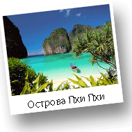
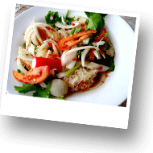

- 
О Таиланде Thai
Королевство Таиланд является самой уникальной страной Юго-Восточной Азии. До 1939 года Таиланд имел название Сиам, что в переводе означает «свобода». Перевод раннего названия Таиланда вполне себя оправдывает. Это единственная страна Юго-Восточной Азии, сохранившая независимость, в то время как все соседние страны были колониями Франции или Великобритании. -
Виза в Таиланд
Таиланд – одно из немногочисленных государств, в которых паспортно-визовый режим для граждан России максимально облегчен. Россия и Таиланд подписали соглашение, по которому граждане Российской Федерации могут находиться в Таиланде без оформления визы сроком до 30 дней. Это соглашение действует с 24 марта 2007 года по сей день.
- 
Кухня Таиланда
Тайская кухня, пожалуй, самая удивительная кухня мира. Самая богатая по своим вкусовым ощущениям. Тайская кухня уникальна по количеству специй и различных ингридиентов, придающих особый вкус каждом блюду. Эта кухня является одной из самых известных и востребованных кухонь в мире, которая сложилась под влиянием соседних стран. При этом кухни различных регионов Тайланда отличаются.
Хуа Хин
-
О Хуа Хине
Хуа Хин - известный старейший морской курорт Таиланда. Находится Хуа Хин на противоположной от шумной Пттайи стороне залива и находится на расстоянии 200 км. от Бангкока. Раньше это был маленький рыбацкий порт, получивший Королевские отличия в 1920году, когда Король Рама VII выбрал это место для летнего дворца, который он назвал "Клай Кангвон", имея в виду "Далеко от Беспокойств" - показатель атмосферы отдыха в Хуа Хине.
-
Интересные места Хуа Хина
Ciсada Market – одно из самых популярный среди местных жителей и среди туристов место. Cicada Market открыт для посещения с пятницы по воскресенье вечером с 18.00 до 23.00. Здесь Вы можете погулять, отдохнуть и приятно провести время. Вашему вниманию представлены сувениры ручной работы, многие из которых изготавливают непосредственно в Вашем присутствии.
-
Экскурсии по Хуа Хину
Хуа Хин является прекрасным местом для знакомства с красотами центрального Таиланда. Остановившись в Хуахине Вы получаете бесконечные песчаные пляжи, можете посетить экскурсии в прекрасные национальные парки, окружающие город со всех сторон, экскурсии по бесчисленным храмам Хуахина и окрестностей, экскурсии по королевским летним дворцам, не случайно построенных именно в этом регионе. Также отсюда удобно посетить экскурсию на легендарную реку Квай и заняться снорклингом на островах, окруженных коралловыми рифами.